|
Roda JC - RKC (1-1) 30 oktober 2004 |
Roda JC
- RKC (1-1) 30 oktober 2004
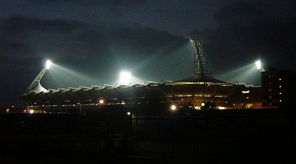
Het duurt niet lang meer eer dit schitterend panorama door de oprukkende
nieuwbouw aan het oog onttrokken wordt.
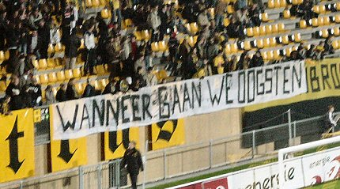
Wie wind zaait.....
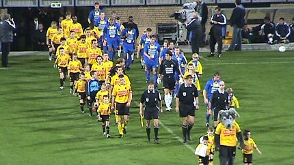
De 3e Noordbrabantse club op rij.
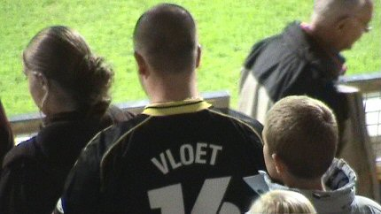
Heel gedurf jongeman....
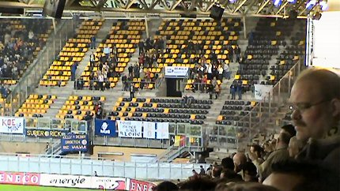
50 supporters van RKC.
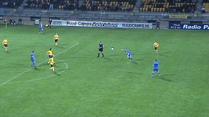
Roda neemt het initiatief en begint aanvallend maar een geweldige
volley van
Fuchs komt als een mokerslag aan: 0-1 (7').
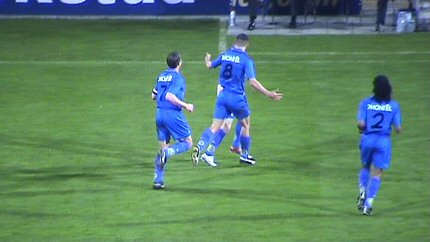
Welke huismoeder heeft die rugnummers geborduurd?
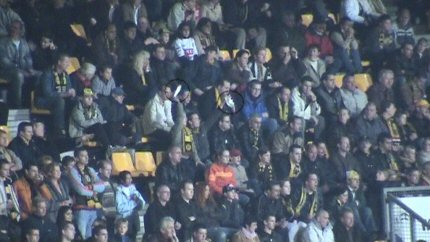
De eerste witte zakdoekjes op west. Zijn die bedoeld voor de
trainer of voor
het fantastische bestuur??? Welkom op de forumavond binnenkort!
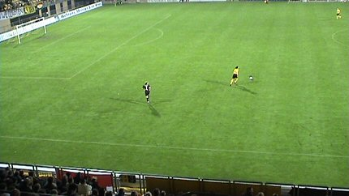
Veel moed der wanhoop vanavond.....
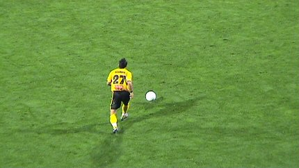
Kuifje was weer erg sterk aan de bal.
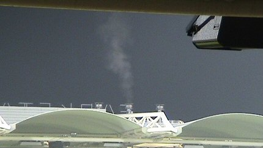
Heeee, witte rook uit de PLS-kamien: een nieuwe paus????
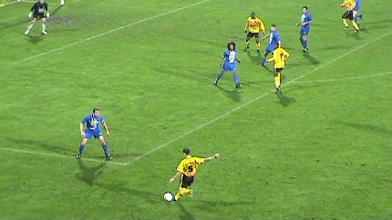
Mooie voorzet van Filipovic die tot doelpunt wordt gekopt door
Sergio (?),
maar helaas buitenspel.
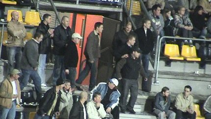
Jungs komt bald wieder, bald wieder zurück....
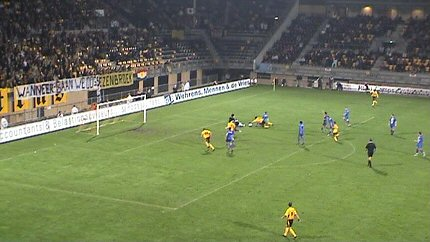
De, behoorlijk in het nadeel van Roda fluitende Temmink, neemt
hier
eindelijk een juiste beslissing: penalty!
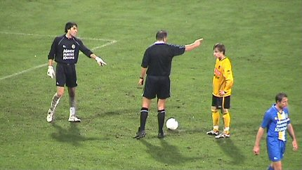
Gregoor van Dijk gaat hem inschieten. Hoog in de hoek rechts: 1-1
(88').
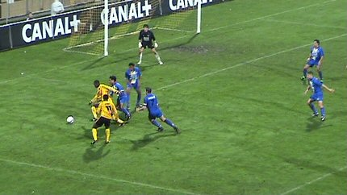
In de slotfase krijgt Roda nog enkele leuke kansen.
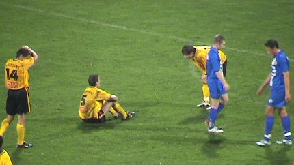
1-1 tegen RKC is te weinig en dat beseffen de spelers van Roda.
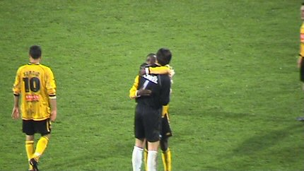
Tijdrekker Sinouh blijkt een vriendelijke man.
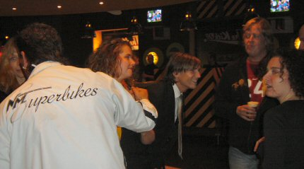
Kevin van Dessel kwam als enige Roda-speler de Kick Off bezoeken.
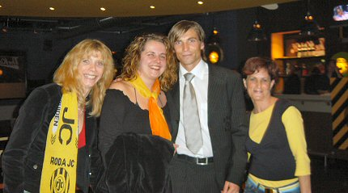
Was Kevin trots op de nieuwe blitze Roda-das of op het nieuwe Rodameëdsje
met de ook al blitze sjaal....?
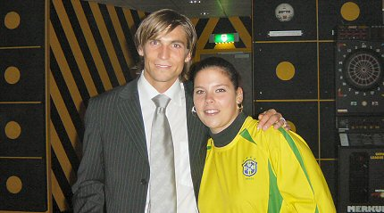
Kevin met Rodagirl Chantal.
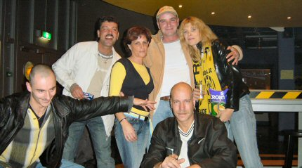
Afscheidsfoto met Yvonne, de motor achter de Kick Off.